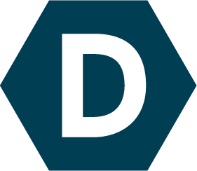
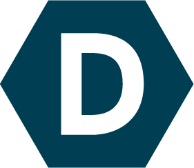

Hello there! My name is Sidhanth Tuli. I'm currently pursuing a Bachelors of Science from the University of Maryland, College Park. I'm studying computer science with a concentration in data science and a minor in statistics. I got started in programming in high school after taking a programming course and I've been writing code ever since. My main interests are in web/front-end development, machine learning, and data science. I've also dabbled in database management, full stack, and general application development. I would say I'm proficient with Python, HTML, CSS, and JavaScript. Specifically I've used libraries like jQuery, Angular 1, node, Bootstrap, and D3. Additionally, I'm familiar with Java, R, SQL, and PHP.
I'm currently working as a web developer for The Diamondback, the student newspaper for the University of Maryland. I've helped update the layout and templates of their website, help them with data visualization and overall expanding their digital presence. I've also worked on projects like the 2017 Salary Guide, the 2016-2017 "A Year In Review" special, and the seven-part sexual assault investigation series "It's Real". Over summer 2017 I had an internship with TD Ameritrade, building a developer portal as well as automating server tests and a website to display the results. I used PHP, HTML, CSS, Java, and JavaScript (jQuery). The previous summer I interned for Casaplex and created a company web portal that included tools to facilitate the comparison of Excel spreadsheets to a database and automate the creation of instruction PDFs with a team of five. I worked on a stack of JavaScript (Angular 1), C# (.NET), and MySQL.
I also have side projects that I put on Github and attended several hackathons over my years in college. I've attended HackPSU, HackMIT, and Bitcamp. My friends and I won HackMIT in 2016 with ,"Window Share", an application that allows users to seamlessly share files by dragging windows to the side of their screen. We came back next year and placed in the top ten, as well as won the Firebase sponsorship prize, with our app "Band Together" that allowed people to collaboratively make music in real time.
Looking to the future, I hope to get a job in one of my interests after I graduate in May 2018.

 
